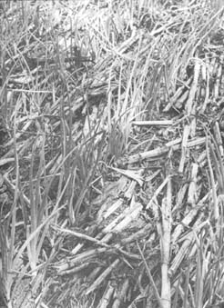
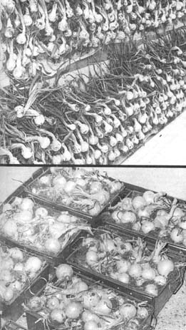

Grow Onions That Keep All Winter Long
Learn how to grow and harvest onions, including which varieties keep longest and how best to store them.
By Jack Roland Coggins
January/February 1973
Think of winter cooking - stew of simmering richly on the back of the stove, maybe, or a pot of hearty split pea soup, or scalloped potatoes bubbling in the oven - and then imagine making any of these cold-weather favorites without onions. Especially home-grown onions.
A dull prospect, isn't it ... and one that can be avoided quite easily once you know the twin secrets of [1] growing firm, robust onions and [2] storing the bulbs properly so that they'll remain sound for months to come.
STORAGE ONIONS
If you want your onions to keep over the winter, raise the varieties that have been bred to store well. I've been successful with White Sweet Spanish, Downing Yellow Globe and Southport Red Globe. Unfortunately, the outstanding White Bermuda isn't suitable for long-term storage.
Set plants out early.
The single most important fac tor in producing keeper onions is a steady, regular rate of growth. Early planting is essential, there fore, because the bulbs do their best even-paced growing under cool conditions when they're less likely to be shocked by abrupt weather changes. Since this vege table can take a lot of cold, I plant here in southeast Nebraska in late February or during March.
You needn't worry that snow will harm your onion bed ... a few light coverings make sturdier plants and condition the soil around the roots. Spring rains, too, help keep the earth loose - the way these bulbs like it - so don't hesitate to plant even though the soil is still too wet for most crops. Deep cultivation isn't required for setting out onions. The bulbs are planted shallow, with only half an inch or so of very moist soil over the roots.
Plant in full sun.
Unlike most cool-weather crops - which do quite well in spots where shade creeps in part of each day - onions demand full sun for proper development. In my experience, even partial shade encourages onions to "go to stalk", thereby cutting both the quantity and quality of their production.
Maintain constant moisture.
Never allow the soil around onions to dry out. The earth should always feel cool and damp (though not soggy) to the touch. I find that a sprinkler hose which produces a fine mist is best for encouraging even growth.
Apply a thin mulch.
Although I mulch four or five inches deep around other crops, I find that a layer of only one inch is best for onions. The developing bulbs shouldn't be covered ... they need exposure to the air and sun to form the dry outer skin that discourages insects, reduces disease contamination and is vital to proper curing and storing.
Bend the tops.
It's common practice among gardeners to turn down the foliage of onions in the hope of preventing the plants from "going to stalk". What many folks don't know, though, is that this trick works best if it's properly timed.
I learned this secret the hard way, after a disastrous experience with my own crop. When I left for vacation one year, my bulbs were well on their way to maturity ... but when I returned they'd shot into greens, leaving the eating ends flavorless and pulpy. When pulled, the onions soon rotted.
What had happened? Well, first a warm dry spell had slowed the development of my plants. Then, abruptly, the skies had opened and dumped down barrels of water. After that, a cool spell had set in, prompting a sudden surge of growth . . . and the bulbs, acting as sets, poured their stored vital ity into making stalks.
The following growing season I was more wary. After similar weather conditions occurred, I observed that several of my onions had split their outer rings. When I cut these globes in half, I could see that the breaks were a sign of internal second growth . . . the problem that had ruined my crop the year before.
Although most of the onions still looked normal, I realized that the same malady was about to take them. "Would bending the tops now do any good?" I wondered. "Guess it won't hurt to try!" . . . and over went the greens.
It worked! I dug close to a thousand onions, up to a pound each, and they kept all winter . . . all summer too, right up to the following season's harvest. Like other growers, I'd tried this method before without success. My experience taught me that the secret is to keep a close watch on the plants as they develop. Usually one or two globes will show telltale signs of second growth before the others, and that's the time to bend over the foliage. Don't wait.
Make sure to grasp the central stalk of each onion plant - not just the upper spears - and gently press the green parts right over to the ground. When they spring up again, push them back down (without breaking the shoots).
Harvest early.
When the upper half of the tops start to fall over or die (in August, around here) the onions are fully developed and ready to harves. 1 used to wait until the stalks died completely . . . but I've found that the longer the mature vegetables stay in the ground, the more they're exposed to damaging insects and to weather that may cause rotting.
It's important to dig - not pull - full-grown onions because the roots and foliage must be undamaged for proper curing. If you yank the plants out of the ground the roots may tear off, injuring the bulb.
Cure properly.
Onions cure best in a shady, dry, cool place . . . never in the sun! (I lay mine out in single layers on a screened porch.) Don't cut off the green stalks. When the shoots are completely dry and the skin tightly closed around the top of the bulbs, your crop is ready to be put away.
Provide pre-winter care.
If you've harvested your onions early, there'll be lots of warm weather to come before winter arrives. To preserve the cured globes during this period, keep them in shallow ventilated containers in a cool, dry room, trying not to let the temperature rise above 70° Fahrenheit. An air conditioner helps . . . not only by cooling, but by removing excess moisture that might rot your vegetables.
Store for winter.
Before moving your onions to their winter quarters, carefully reinspect each one. Any bulb that has a soft spot or other imperfection should be set aside for immediate use. This final sorting is important . . . just one or two bad specimens can start a chain reaction which may damage even those that are perfectly cured.
After checking over the globes, store your firm onions where the temperature can be kept above freezing but preferably below 40° F. (I use an empty unheated room on the north side of the house.)
Treated as I've described, your onion harvest should see you through the winter months, and may still be adding zest and goodness to your meals when the next crop is well on its way to maturity.
 Mature onions should always be dug (never pulled) their roots are left intact. Some gardeners wait until the plants' tops have completely died before harvesting the bulbs but I prefer digging my onions as soon as their growth has stopped (when about one-half the tops have fallen over). The weather is very erratic here in southeast Nebraska and, left in the ground, onions sometimes start a second a growth (which spoils their keeping qualities). |
 A light mulch, especially one that ""breathes"" (like dry cornstalks) is highly suited to growing keeper onions. The mulch both helps maintain consistent moisture and keeps the ground cool. |
 Once my onions are half-mature or older and l see one of or two developing split rings, I gently bend over ,the tons of all the plants. This action does seem to help keep the crop growing at a steadier rate. |
|
 TOP: Cure onions thoroughly before packing them away in ventilated containers. It takes a long time, so don't become impatient. A cool, shady, screened porch where insects can be kept away from the bulbs is satisfactory for this initial curing. BOTTOM: Leave their tops on and store onions in ventilated containers close to the floor in a cool, dark and dry room. Most of the onions shown here are Earl May Seed and Nursery Company's White Sweet Keeper. |
|
|